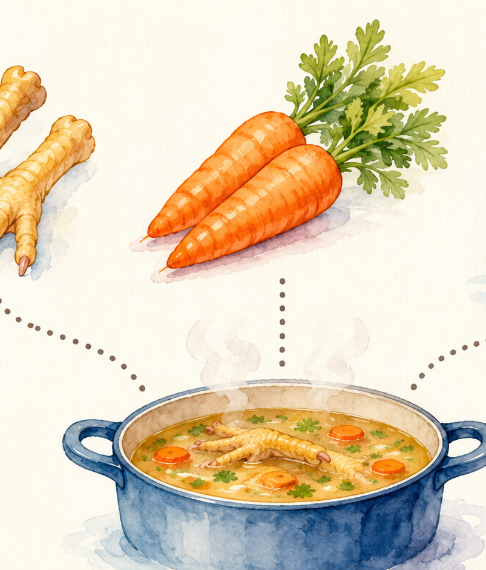
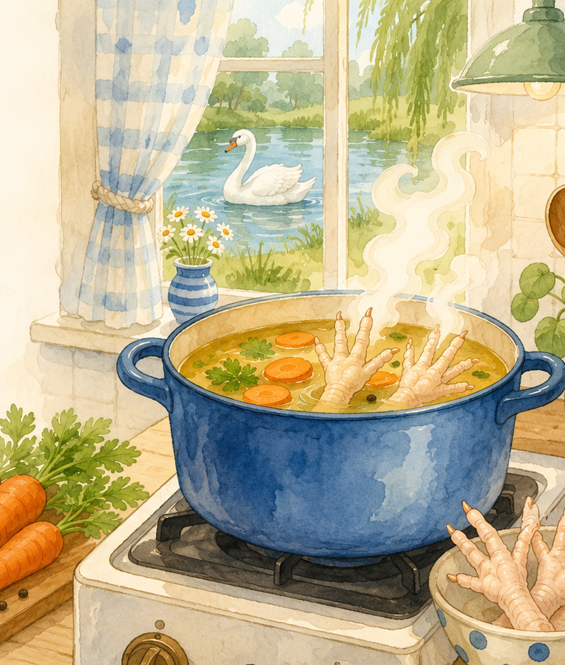
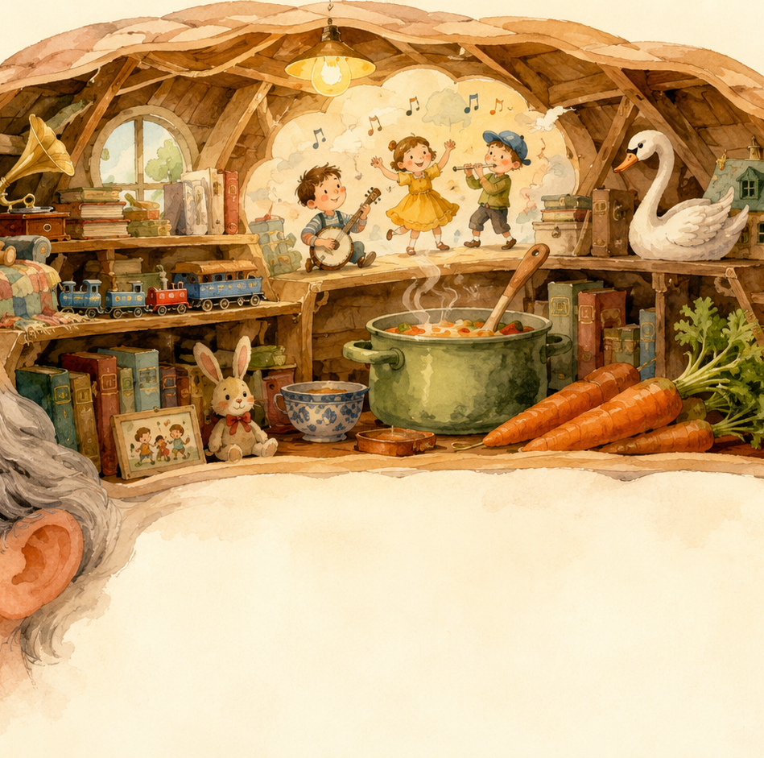
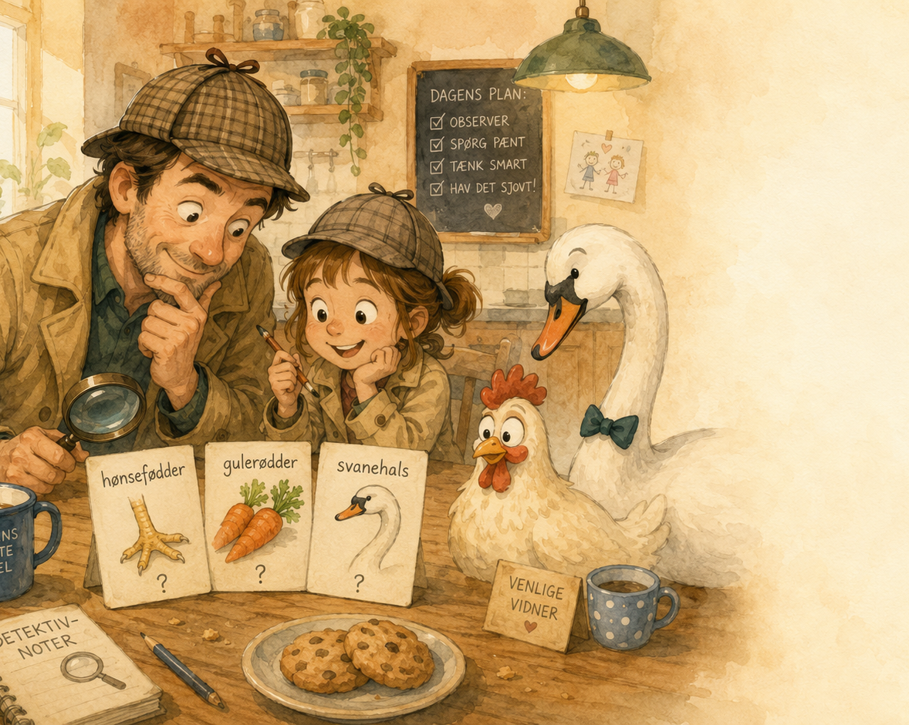
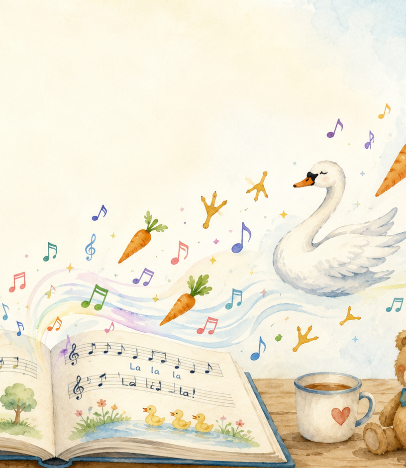

2026-07-23
En lille præsentation om, hvorfor en onkel på omkring “stadig relativt ung” kan høre en børnesang, når der tales om suppe.
Til Dagmar — med mildt pædagogisk onkelgaranti
Før joken kan forstås, skal vi lige samle sporene.
Samtalen gik nogenlunde sådan:

Der er en lille kerne af madlogik under alt onkelvrøvlet.
kan bruges til fond/suppe, fordi skind, sener og brusk giver fylde i væsken.
giver sødme, farve og den slags pænhed, der får suppe til at se mindre “frossen fod”-agtig ud.
Svanenhalsen
er dér, hvor opskriften forlader køkkenet og går direkte ind i børnesangsafdelingen.

Onkelens hjerne hørte ikke kun “mad”. Den hørte også en gammel remse.
Mange voksne kender børnesangen/remse-linjen:
“Hønsefødder og gulerødder
og halsen af en svane …”
Den er ikke berømt for dyb mening. Den er berømt for rytme, fjollede billeder og ord, der sætter sig fast.
Det er ikke én joke. Det er fire små hjul, der kører på samme tid.
1
Hønsefødder
→
2
Gammel sang
tænder i hjernen
→
3
Suppe gør det
til “opskrift”
→
4
Svanehals =
absurd finish
Det sjove er altså overgangen: En rigtig mulig suppeidé bliver koblet til en vrøvlesang, som om sangen var en seriøs kogebog.
Fordi voksenhjerner er fyldt med gamle melodier, reklamer, citater og andet nyttigt rod.

Fordi hun manglede den skjulte fil i hukommelsen: sangen.

Jokes med referencer virker sådan:
I dette tilfælde var adgangskoden: en gammel børnesang.
Her bliver ordspillet næsten synligt med lup.
I sangen er det “halsen af en svane” — en mærkelig, næsten eventyrlig ingrediens.
I samtalen blev det til “svanehals” — som lyder kortere og mere opskriftsagtigt, men stadig er helt fjollet.
Pointen er netop, at onkel tager en vrøvlelinje og lader som om, den er kulinarisk visdom.
Anbefalet køkkenpraksis: brug hønsefødder og gulerødder. Lad svanen svømme videre.

En praktisk metode til næste gang nogen siger noget, der lyder som fejl i sproget.
Trin 1
Find det mærkelige ord
→
Trin 2
Spørg: “Er det fra en sang, film eller reklame?”
→
Trin 3
Tjek om onklen ser meget tilfreds ud
Hvis svaret på trin 2 er “ja”, er det sandsynligvis ikke køkkenrådgivning. Det er kulturarv i sokker.
Bonus: Man må gerne bede onklen synge kilden. Det gør ham enten glad eller meget stille.
Joken virker sådan:
frosne hønsefødder
+ rigtig suppeidé
+ gammel børnesang
+ én alt for selvsikker onkel
= en reference-joke, der først skal forklares — og som derfor næsten automatisk bliver mere onkelagtig.
Suppen kan måske blive god. Referencen skulle bare koge lidt længere.